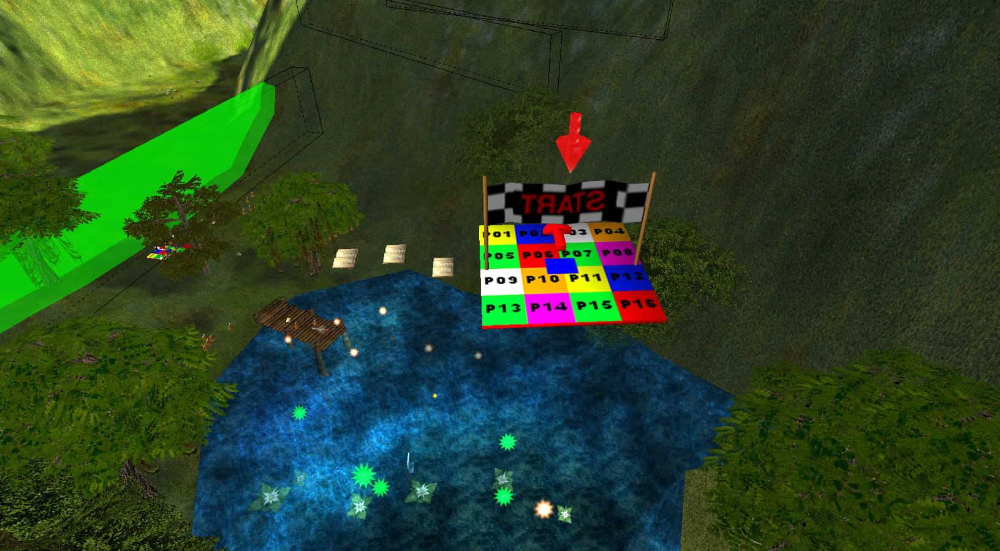
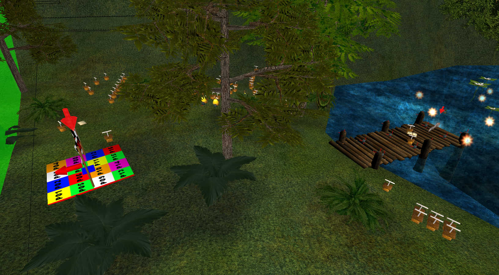
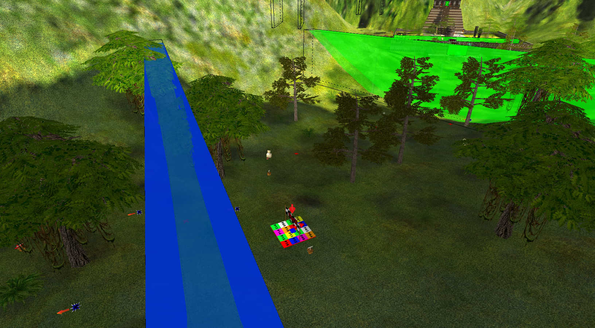
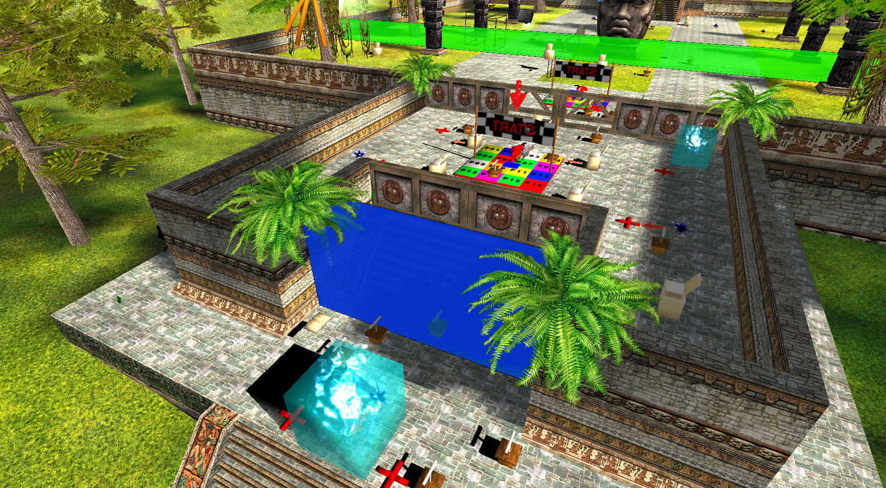
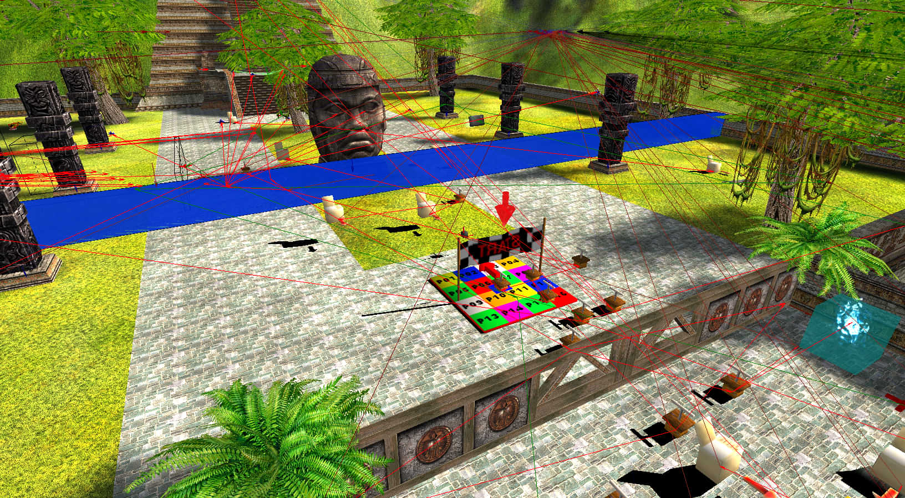
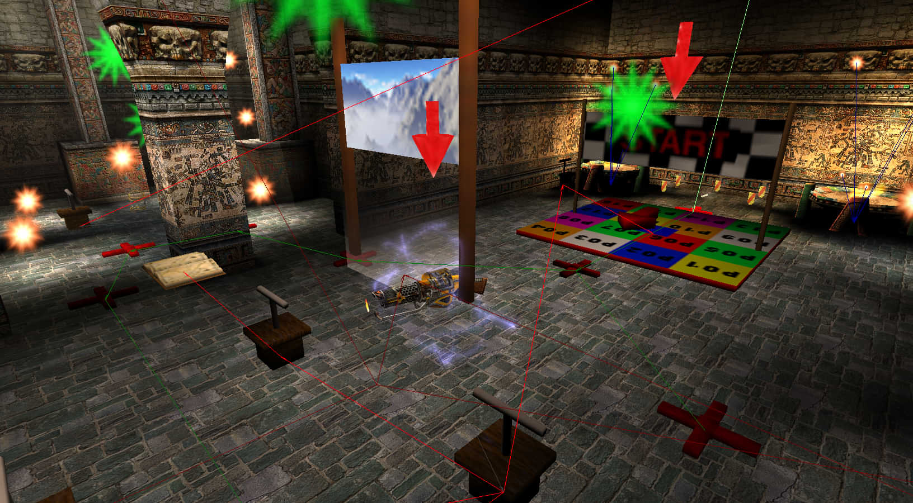
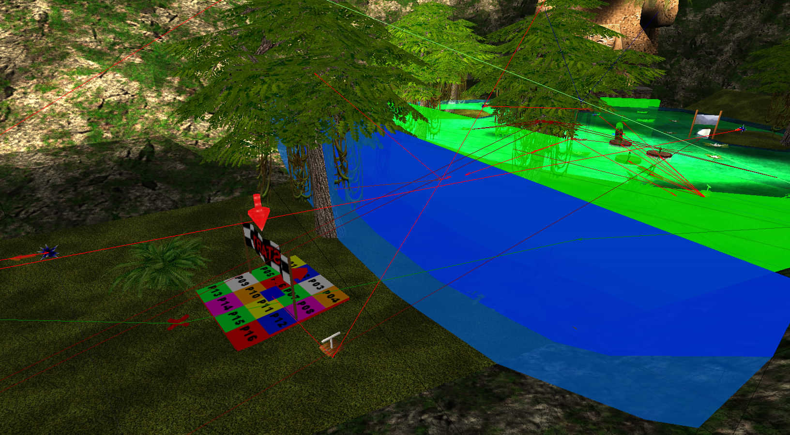
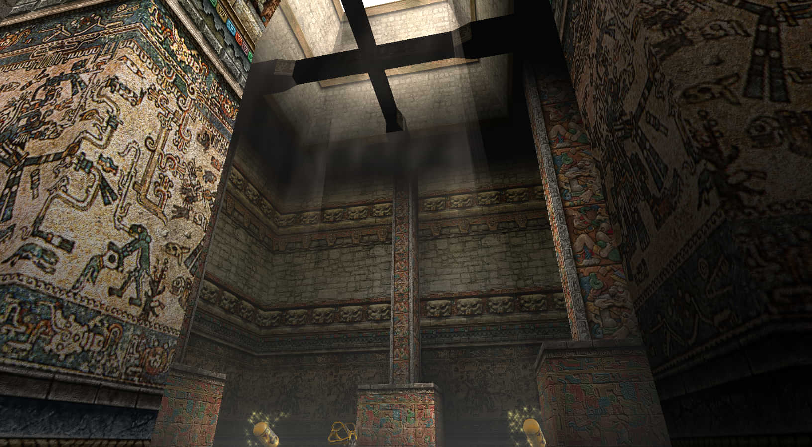
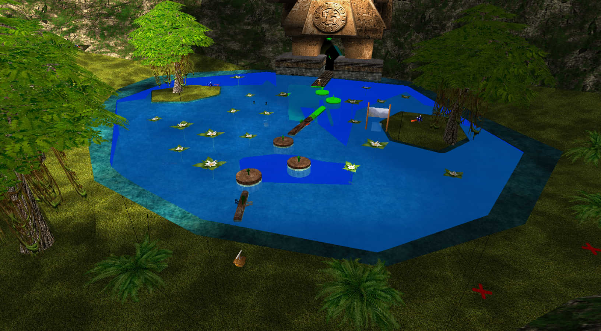

Sierra de Chiapas¶
Any% Tourist/Easy¶
Any% Normal¶
Any% Serious¶
100%¶
Co-op¶
Player markers¶
Here are the player markers and what you need to pick up or touch to activate them:       
This is the spot where you can go out of bounds by either rocket jumping twice, or getting sniped while jumping straight up on someone's head 
This spot is interesting: if you enter water from out of bounds, the TouchField will not trigger; it will trigger and spawn fish upon exiting rather than entering 
General notes¶
When you spawn in the air, you have movement control for a brief moment, meaning you can hold forward and get a significant push forward. For full-game runs, 3 or 4 out of 6 players can take Serious Speed for the next level.